Biosafety
Biosafety and biosecurity are essential principles that ensure responsible conduct in biological research and experiments. Biosafety focuses on protecting people, the environment and the community from unintentional exposure to biological agents and hazardous materials, while biosecurity emphasizes preventing misuse, unauthorized access or unintentional release of resources. Together, they form the foundations of safe laboratory practice.
Biosafety training
Biosafety training is mandatory at GEMS Taiwan. It includes formal instruction in laboratory safety principles, completion of a written examination and signing of a consent form confirming understanding and compliance with regulations. High performance in safety assessments is expected, demonstrating strong understanding of responsibility, therefore it requires retesting until full score.
Basic laboratory training
A structured two month basic laboratory training program provides hands-on experience in essential molecular biology techniques including miniprep, restriction enzyme digestion, Golden Gate assembly, gel electrophoresis, PCR, bacterial transformation, and liquid culture handling. This training ensures technical competence of everyone who enters the lab while reinforcing safe laboratory habits.
All personnel must achieve a full score on the biosafety examination to demonstrate strong understanding of safety protocol and responsibilities. Retesting is required until a perfect score is achieved. Clear roles and responsibilities are established for all team members, ensuring accountability and understanding of individual obligations in maintaining laboratory safety standards.
Research framework and biological systems
Safe research relies on using peer-reviewed scientific literature, such as PubMed, to guide experimental design and ensure biosafety. These studies provide validated methods, risk assessments, and established safety principles that help researchers choose appropriate organisms, tools, and containment strategies. In synthetic biology and microbiology, this evidence-based approach ensures experiments follow proven safety standards while incorporating up-to-date knowledge from the scientific community.
Experiments are therefore conducted using non-pathogenic chassis organisms such as Bacillus subtilis, ensuring a safe and well-characterized biological platform. Standard genetic elements and antibiotic resistance markers are used under strict biosafety guidelines. All experiments are designed and performed within controlled conditions to maintain safety and reliability.
Bioreactor safety
Our bioreactor project incorporates multiple layers of security design to prevent uncontrolled release or misuse of the engineered system:
Primary containment: hollow fiber membrane
The hollow fiber membrane is the critical containment barrier that prevents bacterial cells and culture medium from escaping the bioreactor system. This semi-permeable membrane serves as the primary physical barrier between the bioreactor culture and the external environment:
- The hollow fiber membrane has precise pore size specifications (0.2 μm nominal pore size) that allow nutrient and waste exchange while retaining bacterial cells
- The membrane's design prevents the passage of bacterial cells (0.5 to 1.0 μm in diameter) while permitting controlled diffusion of small molecules (nutrients, oxygen, waste products)
- The large surface area of the hollow fiber membrane system allows efficient exchange of nutrients and removal of metabolic waste while maintaining strict containment
- Regular inspection and integrity testing of the membrane are essential to ensure it remains the effective primary containment barrier
- Any signs of membrane degradation, discoloration, or suspected compromise must be reported immediately and the system taken offline for investigation and replacement if necessary

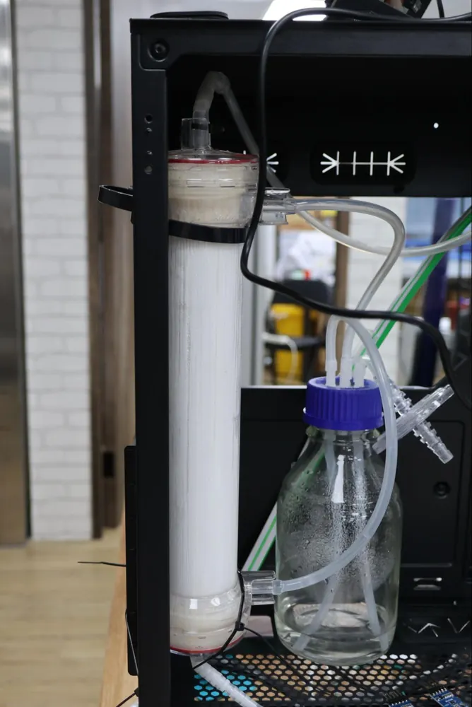
Secondary containment: physical containment and leak detection
The bioreactor system is designed with containment features and multiple detection mechanisms:
- TMP (transmembrane pressure) leakage detection
- Real-time monitoring of transmembrane pressure ensures early detection of membrane integrity failure
- Abnormal pressure changes indicate potential breaches in the containment system
- Automated alerts trigger containment protocols if TMP exceeds safe thresholds
- Droplet leakage detection
- Sensor systems monitor for liquid leakage from the bioreactor vessel and associated tubing
- Early detection of even small droplet leaks prevents environmental release of biological material
- Detection triggers immediate containment and decontamination procedures
- Shell side turbulent detection
- Monitoring of shell-side fluid dynamics ensures optimal containment conditions
- Changes in flow patterns can indicate equipment failure or breaches
- Continuous monitoring maintains system integrity throughout operation
Dual use research of concern (DURC) in bioreactor application
Our bioreactor project has been evaluated for potential dual-use research of concern (DURC) implications. DURC refers to legitimate research that could potentially be misused to pose a biological threat.
Consideration of DURC in our project:
- Our Bacillus subtilis-based bioreactor system is designed for beneficial applications in crop stress monitoring and response
- The system uses non-pathogenic, well-characterized organisms with no inherent pathogenic potential
- Access to the bioreactor system, engineered strains, and operational protocols is restricted to authorized laboratory personnel
- All research is conducted transparently, documented, and aligned with institutional biosafety and biosecurity policies
- Personnel conducting this research have completed comprehensive biosafety and biosecurity training
- We commit to responsible conduct of this research and will not knowingly contribute to the misuse of biological systems for harmful purposes
Laboratory facilities and safety infrastructure
The laboratory is equipped with essential safety infrastructure to support emergency preparedness and daily safe practice.
- Fire extinguishers: readily accessible for rapid response to fire incidents
- Eyewash station: for immediate flushing of eyes in case of chemical or biological exposure
- Spill kits: containing absorbent materials, neutralizing agents, and specialized PPE for safe containment and cleanup
- Biosafety cabinets: providing containment for biological hazards and reducing risk of exposure or environmental release
- Waste disposal bins: designated for proper segregation and disposal of different waste types (biological, chemical, sharps)
- Fire blankets: for smothering small fires and protecting personnel
- Lab coat hangers: for proper storage and organization of protective equipment
- First aid kits: stocked and readily available for minor injuries
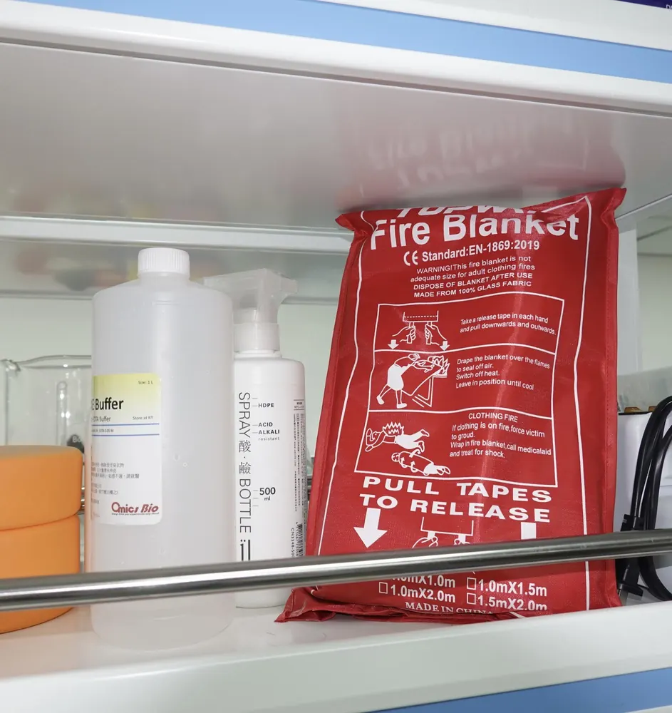
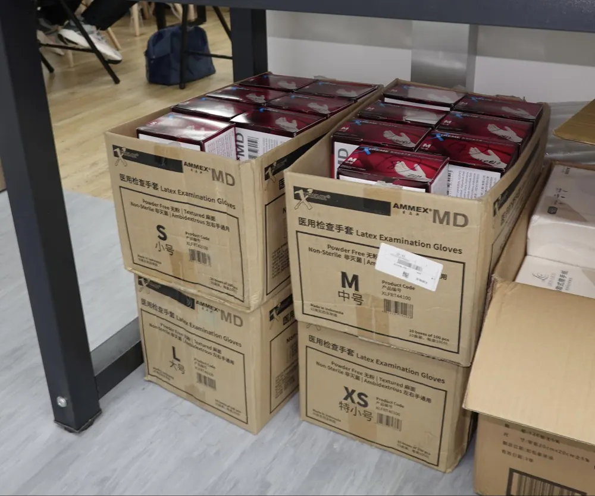
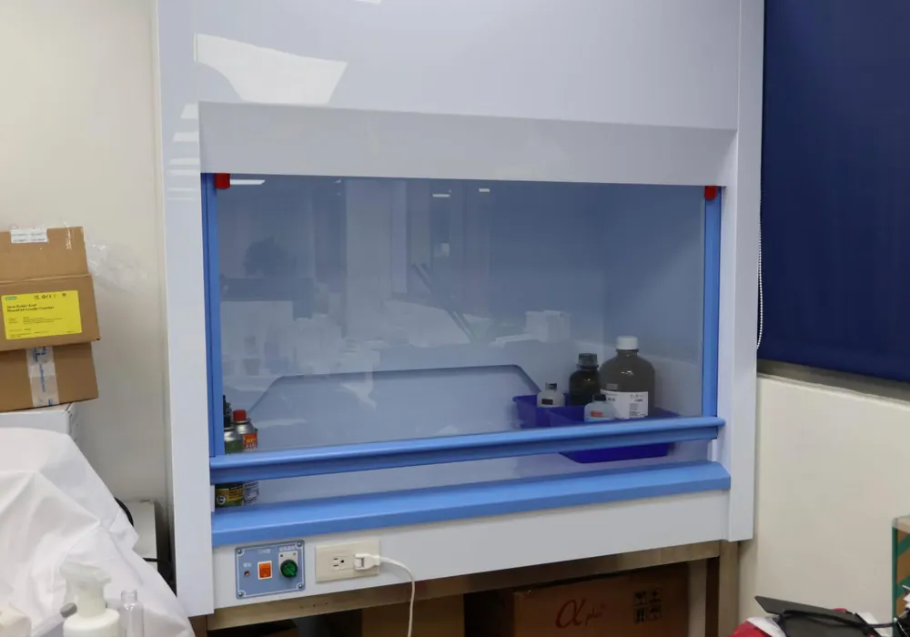
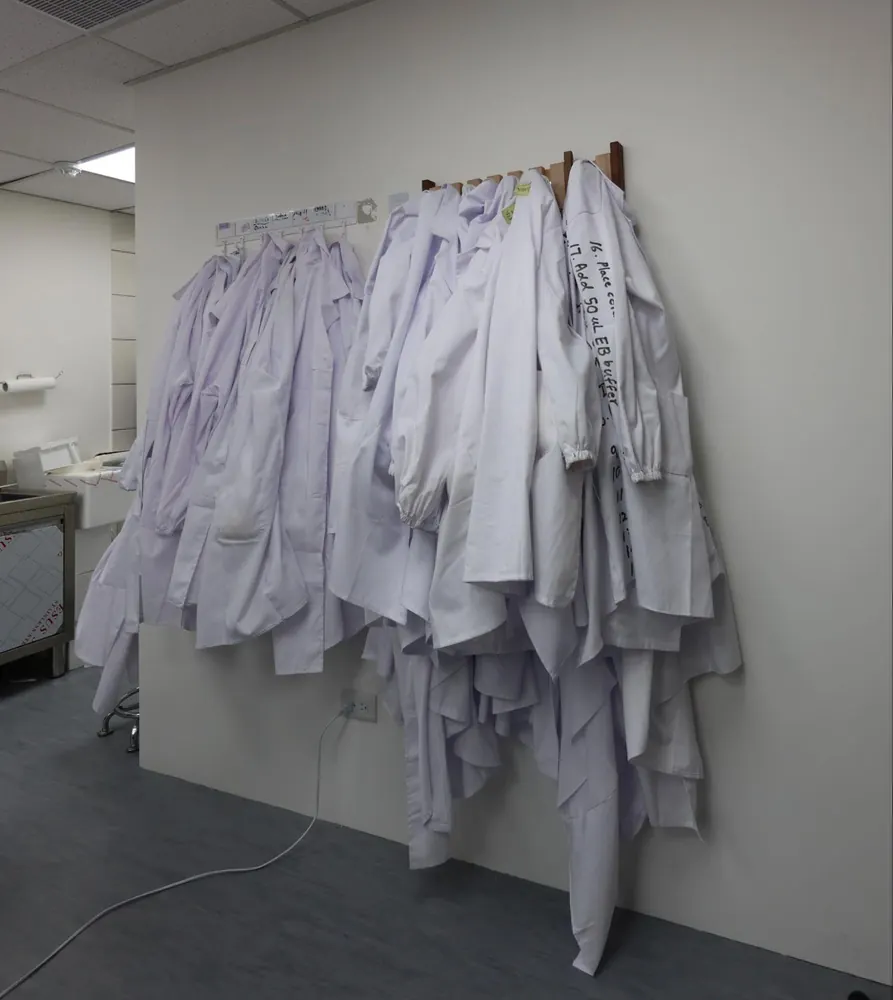
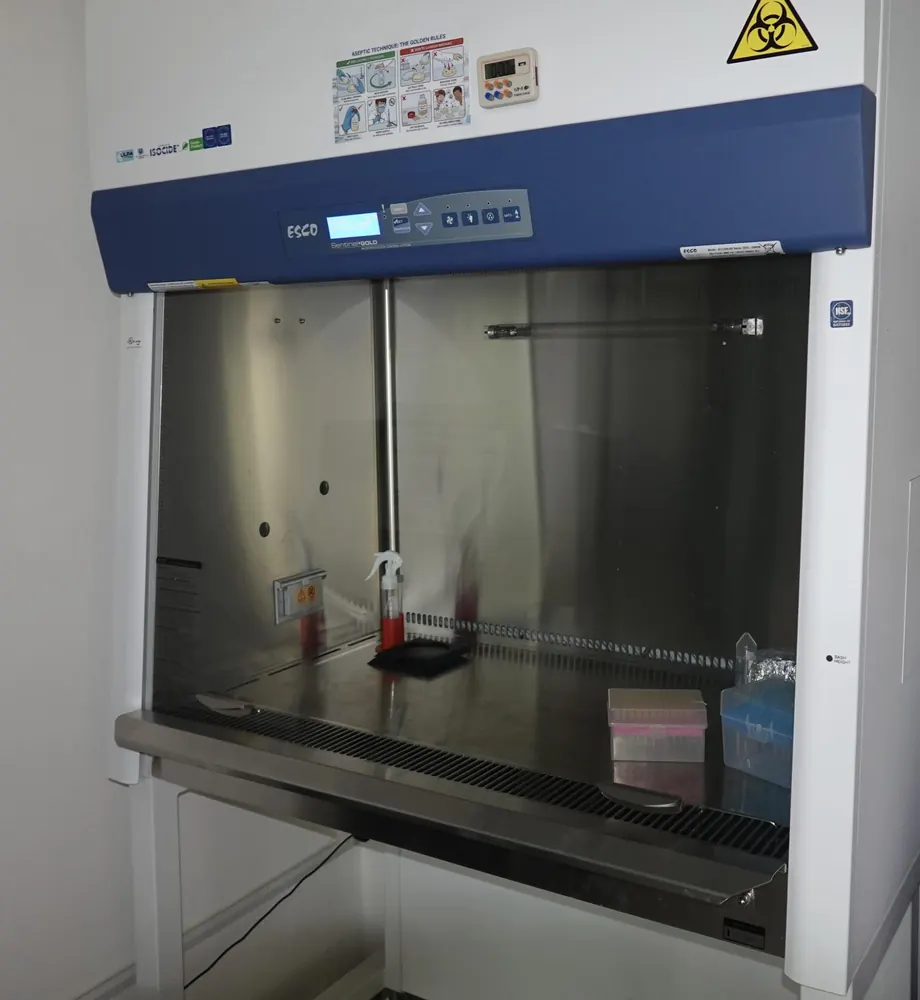
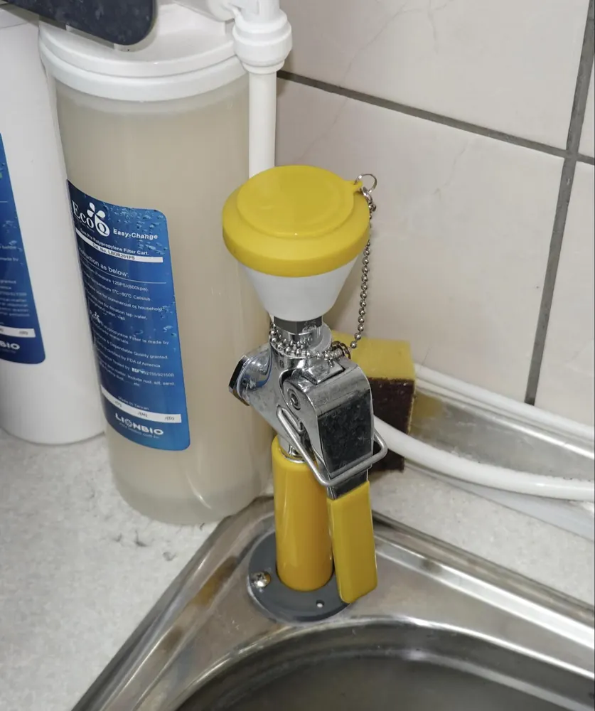
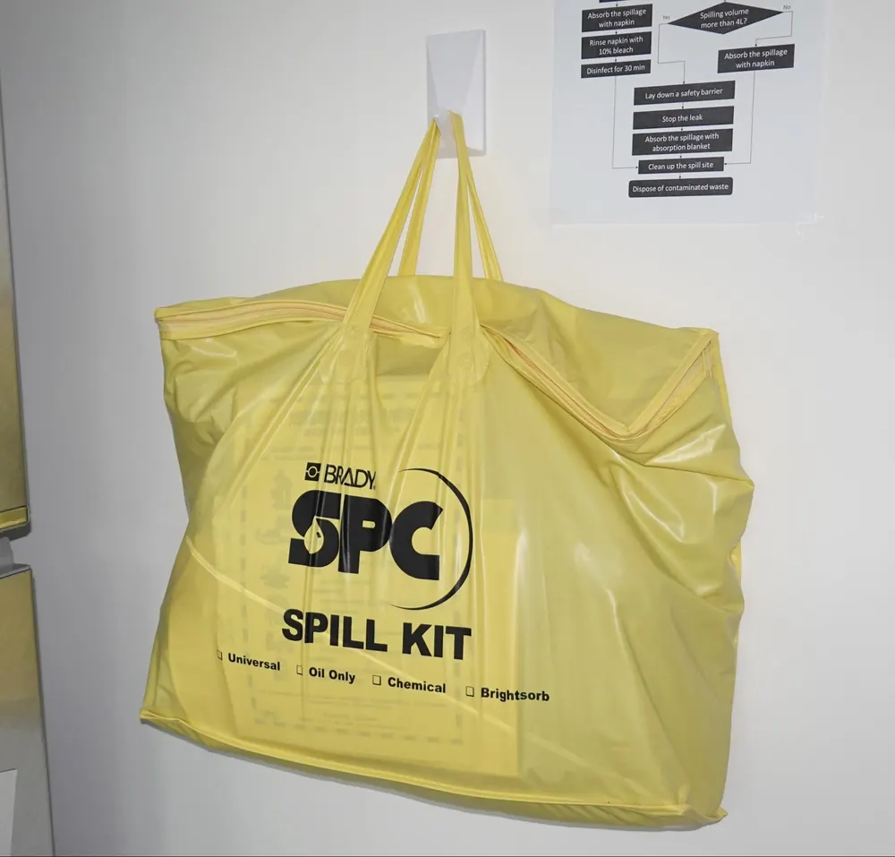
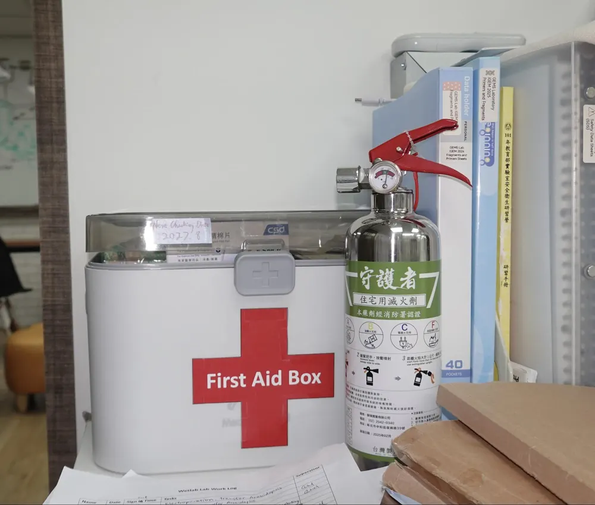
All personnel must be familiar with the location and proper use of these facilities.
Risk assessment
Chemical hazards
Chemical hazards are identified and managed through proper risk assessment procedures. All laboratory personnel are trained to consult Safety Data Sheets (SDS) to understand the properties, hazards, handling requirements, and emergency measures associated with chemicals. Proper storage practices are followed to prevent incompatible substances from coming into contact and to minimize the risk of accidents. To reduce exposure to chemical hazards, a strict laboratory dress code is enforced. Personnel must wear gloves, lab coats, long pants and closed-toe shoes, while shorts and open footwear such as slippers are prohibited. Long hair must be tied back to prevent accidental contact with chemicals or laboratory equipment.
Physical hazards
Physical hazards, including thermal risks, machinery, glass apparatus, high-pressure vessels, and physical injuries, are managed by adhering to posted laboratory rules and GHS hazard pictograms as well as receiving proper equipment training before operating any machinery or specialized apparatus. Fire risks are controlled through readily available fire blankets and fire extinguishers, and minor injuries with a stocked first aid box. Furthermore, all risks were addressed during laboratory safety training.
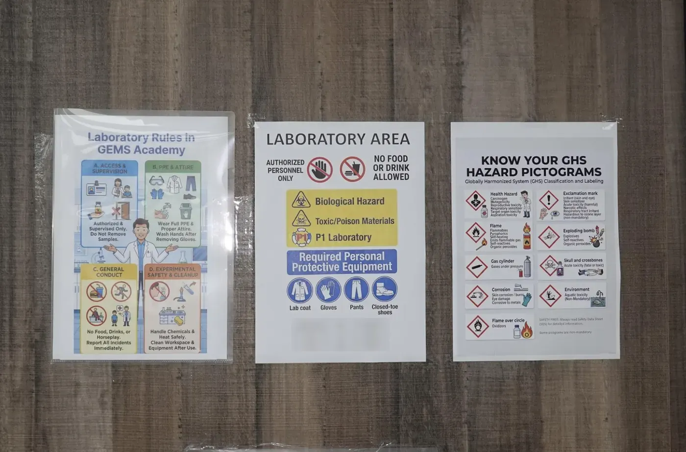
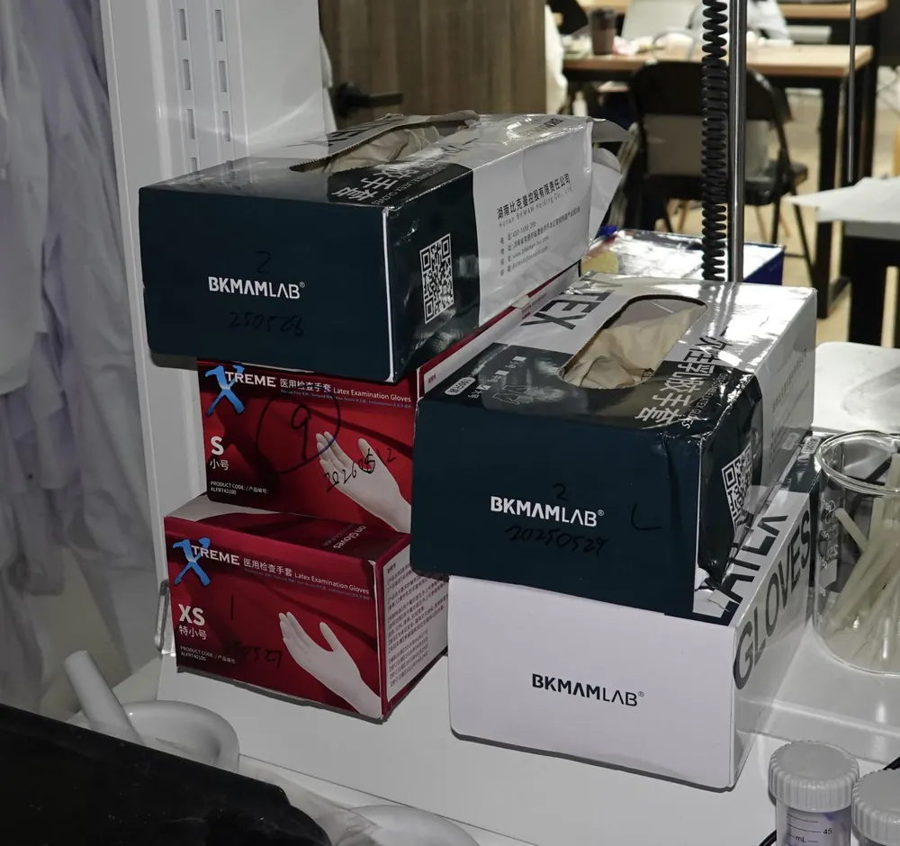
Spill risk assessment
Accidental spills can pose biological and chemical hazards if not handled correctly. Laboratory members are trained in spill response procedures to ensure safe containment, cleanup, and disposal of spilled materials. When handling biological samples, biosafety cabinets are used to provide containment and reduce the risk of exposure or environmental release. Additionally, volatile or reactive procedures are conducted inside a chemical hood. If a liquid release occurs, a spill kit containing absorbent materials, neutralizing agents, and specialized PPE is available for use to contain and clean up the spill safely.
Biological waste management
Proper waste management is critical to preventing environmental release and protecting personnel. Biological waste disposal follows strict protocols.
- Solid biological waste (culture plates, contaminated materials) is autoclaved at 121 °C for 15 to 30 minutes before disposal.
- Liquid biological waste is treated with appropriate disinfectants (10% bleach or equivalent) before safe disposal
- All waste disposal conforms to BSL-1 (Biosafety Level 1) standards to ensure the safety of laboratory personnel and the environment
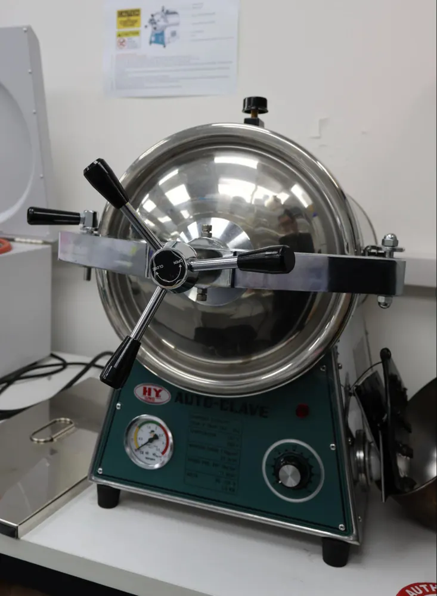
Emergency procedures
All laboratory personnel are trained in emergency response protocols to ensure rapid and appropriate actions in case of incidents. Clear procedures are established for the following emergency scenarios:
Chemical spillage
Response protocol:
- Immediately alert nearby personnel and evacuate the affected area if the spill is large or involves hazardous substances
- Consult the SDS of the spilled chemical to understand appropriate response measures
- Put on appropriate PPE (gloves, lab coat, eye protection)
- Use absorbent materials from the spill kit to contain the spill
- For reactive or volatile chemicals, use a chemical hood or well-ventilated area
- Use neutralizing agents if applicable (e.g., sodium bicarbonate for acids)
- Dispose of contaminated materials in appropriate hazardous waste containers
- Decontaminate the work surface with appropriate disinfectant
- Report the incident to the laboratory supervisor and document the event
Biohazard spillage
Response protocol:
- Immediately alert nearby personnel and evacuate the affected area
- Do not touch or attempt to clean the spill without proper PPE
- Put on appropriate PPE (gloves, eye protection, lab coat, and potentially a mask)
- Notify the biosafety officer or laboratory supervisor immediately
- If the spill occurred outside a biosafety cabinet, carefully move the spill kit to the affected area
- Cover the spill with absorbent material (e.g., paper towels)
- Spray with disinfectant (10% bleach or equivalent) and allow contact time (typically 10 to 15 minutes)
- Carefully collect contaminated materials and place in biohazard waste containers
- Clean and disinfect the affected area thoroughly
- Document the incident and review circumstances to prevent recurrence
Fire
Response protocol:
- Evacuate the laboratory immediately if the fire is large or spreading
- Alert other personnel by activating the fire alarm
- Use a fire extinguisher only if the fire is small and contained and you have a clear escape route
- Aim the extinguisher at the base of the flames using a sweeping motion
- If the fire continues to spread or smoke becomes heavy, evacuate immediately
- Close doors behind you to slow the spread of fire and smoke
- Move to the designated assembly point outside the building
- Do not attempt to re-enter the laboratory under any circumstances
- Wait for the fire department to arrive and provide them with information about any hazardous chemicals in the lab
Chemical exposure
Response protocol:
- Skin exposure: Immediately remove contaminated clothing and flush the affected area with copious amounts of water for at least 15 minutes. Seek medical attention if irritation persists.
- Eye exposure: Use the eyewash station to flush eyes thoroughly for at least 15 minutes, holding eyelids open. Seek immediate medical attention.
- Inhalation exposure: Move to fresh air immediately. If breathing is difficult, seek immediate medical attention and provide responders with information about the chemical involved.
- Ingestion exposure: Do not induce vomiting. Seek immediate medical attention and bring the SDS of the ingested chemical.
- Notify the laboratory supervisor and document the incident
- Follow up with appropriate medical care as needed
Injury
Response protocol:
Minor injuries (cuts, abrasions, minor burns):
- Stop work and move to a safe location
- Wash the wound with soap and water
- Apply appropriate first aid using materials from the first aid kit
- Apply pressure if bleeding to control hemorrhage
- Cover the wound with sterile gauze or a bandage
- Notify the laboratory supervisor
Severe injuries (deep cuts, severe burns, crush injuries, loss of consciousness):
- Call emergency services (119 in Taiwan) immediately
- Do not move the injured person unless there is immediate danger
- Provide basic first aid if trained to do so
- Alert the laboratory supervisor and provide information about the incident
- Document the incident thoroughly and follow up with appropriate medical care
Conclusion
Biosafety and biosecurity practices at GEMS Taiwan reflect a commitment to responsible science. Through training, proper use of facilities, rigorous risk assessment, clear emergency procedures, and biosecurity measures, we ensure that our research benefits society while minimizing risks to personnel, the environment, and the broader community.